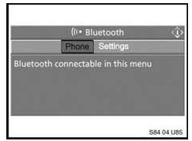

Cell Phone - Bluetooth(R) Handsets Won't Pair To Vehicle
SI B 84 04 07Phone, Navigation Systems
March 2007
Technical Service
SUBJECT
Bluetooth(R) Handsets No Longer Pairs to the Vehicle
MODEL
SITUATION
^ After updating the vehicle with Progman, the customer's compatible Bluetooth enabled handset no longer pairs to the vehicle.
^ An approved handset no longer connects to the vehicle.
CAUSE
Pairing conflict, for example:
^ During a programming update, the Bluetooth device list was corrupted. When the handset was paired to the vehicle again a duplicate Bluetooth address (IP address) for the Bluetooth device may have been stored in the vehicle or in the handset.
^ An attempt was made to pair a non-compatible handset to the vehicle which is now preventing a compatible handset from being paired to the vehicle.
^ The customer was in an area of high external interference that prevented their Bluetooth device form automatically connecting to the vehicle. Because of this, the customer attempted to re-pair their handset to the vehicle and in doing so, created a conflict.
PROCEDURE FOR I/K-BUS VEHICLES (E.G. E46, E53, E83, E85, ETC)
Deleting Devices
1. Delete all Bluetooth devices from the handset's Bluetooth device list. Refer to the handset's owner manual or the handset manufacturer's website for details on how to perform this procedure.
2. Perform a short test on the vehicle using the DISplus or GT1
3. Select 'Control Unit functions'
4. Select the 'TCU'
5. Select 'keypad handsetBluetooth mobile'
6. Select 'number of Bluetooth devices' and press 'Display'
7. The number of paired devices will be displayed (This is the total number of devices that have been previously paired to the vehicle)
8. Select 'Delete list of Bluetooth devices' and press 'Activate'
9. Select 'number of Bluetooth devices' and press 'Display' (This should now display '0')
10. Turn the ignition off for two minutes
Pairing approved handsets
11. Turn the ignition on.
12. Pair the customer's compatible handset the vehicle following the procedure outlined in SI B84 13 04.
13. Allow the phonebook to complete downloading and check the functionality of the system.
14. Turn the ignition off for two minutes.
15. Repeat steps 11 to 13 for the customer's other compatible handsets taking into consideration the 'Discoverable mode' time restrictions with each additional handset that is paired to the vehicle.
PROCEDURE FOR MOST-BUS VEHICLES WITH CD/CID (E.G. E60, E63, E65, E70, E90, ETC.)
1. Turn the key on.
2. From the start menu press briefly down on the controller.
3. Scroll down to the "Communication settings" and select.
4. Select "Bluetooth" and press controller.
5. Select "Phone" and press controller.
6. "Bluetooth connectable in this menu" is displayed along with a list of previously paired devices.

7. One at a time, select each handset listed in the device list and press down on the i-Drive. A pop up menu will be displayed asking if you want to delete the device. Select "yes".
8. Turn the ignition off and wait for the MOST-bus to enter sleep mode (approximately 4 minutes).
9. Pair the customer's compatible handset the vehicle following the procedure outlined in SI B84 13 04.
10. Allow the phone book to complete downloading and check the functionality of the system.
11. Follow steps 9 and 10 to pair any additional compatible handsets.
PROCEDURE FOR MOST-BUS VEHICLES WITH RAD2 (E.G. E90, ETC.)
1. Turn the key on.
2. Press the "MENU" button.
3. Turn rotary knob to highlight "Phone".
4. Press the soft-key under "Phone".
5. "Searching for paired devices" is displayed.
6. Press the soft-key under "BT".
7. Using the scrolling knob, select each device from the previous paired device list and then press the soft-key under "DELETE".
8. Turn the ignition off and wait for the MOST-bus to enter sleep mode (approximately 4 minutes).
9. Pair the customer's compatible handset the vehicle following the procedure outlined in SI B84 13 04.
10. Allow the phone book to complete downloading and check the functionality of the system.
12. Follow steps 9 and 10 to pair any additional compatible handsets.
COMPATIBLE HANDSET INFORMATION
Before the complaint can be addressed, the particular handset must be verified for compatibility with the respective Bluetooth system installed in vehicle (E.g. BMW Assist w/Bluetooth technology, BTUM, ULF). On vehicles equipped with BMW Assist with Bluetooth wireless technology, to confirm whether or not the phone is compatible, visit www.bmwusa.com/bluetooth for a list of handsets that have passed BMW testing for compatibility. Note the following disclaimer on this web site:
^ "This list is provided for reference only. The mobile phones listed here have passed compatibility tests as of the date of testing and meet or exceed minimum standards established by BMW. The list is not a warranty for phone performance or functionality. BMW makes no guarantees or warranties as to the performance of each phone while connected to your BMW via Bluetooth Wireless Technology. Furthermore, software releases by BMW, the phone supplier or the wireless carrier dated after testing might alter compatibly results. While many phones are offered with Bluetooth Wireless Technology, not all phones support the necessary profiles to work with your BMW. BMW does not guarantee availability or functionality with all wireless carriers. Functions such as synchronizing the address book and transferring a call into or out of the vehicle may function differently from phone to phone".
WARRANTY INFORMATION
Covered under the terms of the BMW New Vehicle Limited Warranty.
Defect Code: Refer to KSD
Labor Operation: Refer to KSD
Labor Allowance: Refer to KSD

Disclaimer